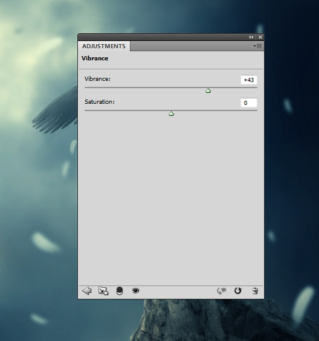

In this Photoshop tutorial I’ll show you how to create a fantasy angel scene.
You’ll learn how to combine different stocks together into a cohesive scene using adjustment layers, masking and brushes. You’ll learn also how manage your layers, work with group, create lighting effect and more.
Final Image
Resources
Step 1
Create a new document in Photoshop with the settings below:
Step 2
Open the sky image. Use the Move Tool (V) to drag the sky into the white canvas and place it as shown below:
Step 3
To soften the sky a bit, go to Filter > Blur > Gaussian Blur and set the radius to 8 px:
Step 4
Go to Layer > New Adjustment Layer > Curves and increase the lightness:
On this layer mask, use a soft black brush to erase the right side to keep the shade there:
Step 5
Make another Curves adjustment layer and decrease the lightness:
On this layer mask,use a soft black brush to erase the left to keep the lightness there:
Step 6
Isolate the rock from the background and place it in the bottom right of the scene:
Step 7
Create a Curves adjustment layer and set it as Clipping Mask. Decrease the lightness on the rock:
We aim to make the main light source from the top left of the scene. On this layer mask, use a soft black brush to erase the left side of the rock where the light reflects on it:
Step 8
Use a Hue/Saturation adjustment layer to change the rock color:
Step 9
Make a new layer, change the mode to Overlay 100% and fill with 50% gray:
Select the Dodge and Burn Tool (O) with Midtones Range, Exposure about 20-25% to refine the light and shade on the rock, also add more detail to it. You can see how I did it with Normal mode and the result with Overlay mode:
Step 10
Open the model image. Isolate her from the background using your familiar method. Make a new layer and activate the Clone Tool (S). Use this tool to delete the tattoo and branches on the model’s legs:
Step 11
Create a new layer and use a hard brush with the color #989079 to paint some missing, flying hairs for the model. I recommend you use a tablet pen in this case.
Step 12
Change the brush color to #deddc8 and paint the lighter hairs for the head:
Step 13
Merge all transparent layers (the extracted model, clone and hair ones) into a new one. Place the merged model onto the rock.
Step 14
Create a new layer under the model layer. Use a soft black brush with the opacity about 40% to paint shadow under the model’s feet:
Name it “shadow 1”.
Step 15
Use a Hue/Saturation adjustment layer (set as Clipping Mask) to desaturate the model:
Step 16
Make a Photo Filter adjustment layer and pick the color #b3defd. On this layer mask, use a soft black brush to erase the dress part as I don’t want it to be affected by this adjustment layer.
Step 17
Use a Curves adjustment layer to darken the model a little:
On this layer mask, use a soft black brush to erase the left and the upper part of the model:
Step 18
Create a new layer with the same settings as in step 9. Use the Dodge and Burn Tool to correct the light and shade on the model, also add more details to the dress.
Step 19
Open the wings image. Use the Move Tool to drag the wings into the working document and place them behind the model:
Step 20
Make a new layer (set as Clipping Mask) and use the Clone Tool to remove some details on the feathers:
Step 21
Make a new Curves adjustment layer and to darken the wings. On this layer mask, use a soft black brush to erase the sides and the upper part to maintain the lightness there:
Step 22
Use another Curves adjustment layer to brighten the upper part of the wings. On this layer mask, use a soft black brush to erase the lower area:
Step 23
Use a Hue/Saturation adjustment layer to change the wings color:
Step 24
To make a shadow of the model and wings on the rock, make a new layer under the model layer and above the “shadow 1” layer. Hold Ctrl+Shift and click the thumbnail of the model and wings to load their selection:
Fill this layer with black and use Ctrl+T to rotate it as shown below:
Lower the opacity of this layer to 50% and use a layer mask to erase the uneccessary part:
Go to Filter > Blur > Gaussian Blur and set the radius to 4px:
Step 25
Change the brush kind to the feather ones and the foreground to #e5e5e5. Select the feather brush you like (it’s better to choose the one which looks similar to the feathers on the wings) and paint some random, flying feathers over the scene.

Apply a Gaussian Blur of 8 px to these feathers:

Step 26
Change the brush color to a darker one (#a8a8a8). Paint some smaller feathers around the model.
Step 27
Select all the feather layers and press Ctrl+G to make a group for them. Change the mode of this group from Pass Through (default group mode) to Normal 100%. Use a Curves adjustment layer to darken the feathers:
On this layer mask, use a soft black brush to erase the following parts:
Step 28
Make a Color Balance adjustment layer on top of the layers:
Step 29
Create another Color Balance adjustment layer:
On this layer mask, use a soft black brush to hide the effect on the scene except on the rock:
Step 30
Create a Vibrance adjustment layer to enhance the color:

Step 31
Use another Vibrance adjustment layer to boost the effect more. On this layer mask, erase the parts that looks oversaturated after this step:
Step 32
Use a Curves adjustment layer to increase the contrast of the scene. On this layer mask, erase the lower side of the right to maintain the shade there:
Step 33
Make a new layer on the top. Use a soft brush with the color #321603 to paint on the top left of the scene. Change this layer mode to Linear Dodge 100%:
Step 34
Change the brush color to #f89e77. Use this brush to paint on the top left, wings and the model. Change this layer mode to Hard Light 100%:
Step 35
Use the same brush to paint on the scene, model, wings and rock. Change this layer mode to Overlay 100%:
Step 36
Paint more light on the rock using the same brush and same mode:
Step 37
Open the lens flares pack. Select the effect you like and place it onto the top of one wing. Change this layer mode to Screen 100%:
Use a layer mask to soften the hard edges of the effect:
Step 38
Place the aureola image above the model’s head and change the mode to Screen 100%. Use Ctrl+T to make it narrower and smaller.
Step 39
Make this aureola brighter and more visible using a Curves adjustment layer:
Step 40
Create a new layer and use a soft brush with the color #ffcab2 to paint the light around the aureola. Set this layer mode to Soft Light 100%:
And We’re Done!
I hope that you enjoyed the tutorial.